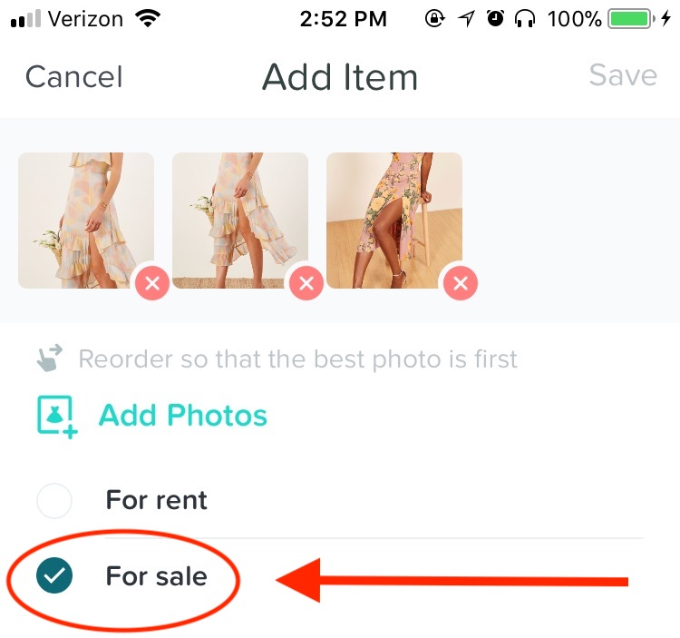

How do I post my items for sale?
You can post new items from the post button at the bottom of the app. If you already have things on the app you’d like to sell, just go to ‘Closet’ in your settings, and you can edit your current listings to add selling.
How much should I sell my item for?
You can sell your item for whatever you would like. We generally suggest about 40% of the retail price for used items in great condition and 60% of the retail value for new items with tags.
What can I post on Curtsy
You can post any clothes: dresses, rompers, and two pieces do best. You can also post accessories like shoes, bags, and jewelry. If you post an accessory, tag it as ‘costume’. We’ll re-tag it for you later. Let us know if there is something you would like to post to Curtsy that we don’t currently offer.
Who pays for shipping?
Buyers pay for shipping. Shipping is typically around $6 but it is already factored into the price of the item you see on the feed.
Someone just bought my item, how/when am I paid?
You’ll be paid in your Curtsy Wallet once the item ships. You can cash out your Curtsy Balance straight to your credit or debit card.
What if my item doesn't fit?
Curtsy does not accept refunds but we do encourage you to relist the item if it does not work for you. When you relist, make sure to include accurate sizing details to ensure fit for the next buyer.
If the item was different than the description listed, please reach out to us.
When will I receive my order?
Most orders ship in 1-3 business days. We will notify you as soon as your item ships. Contact us for expedited shipping options or if you need a item by a specific date.
What are the fees of selling on Curtsy?
You keep 80% of your sale, and Curtsy’s commission is 20%.